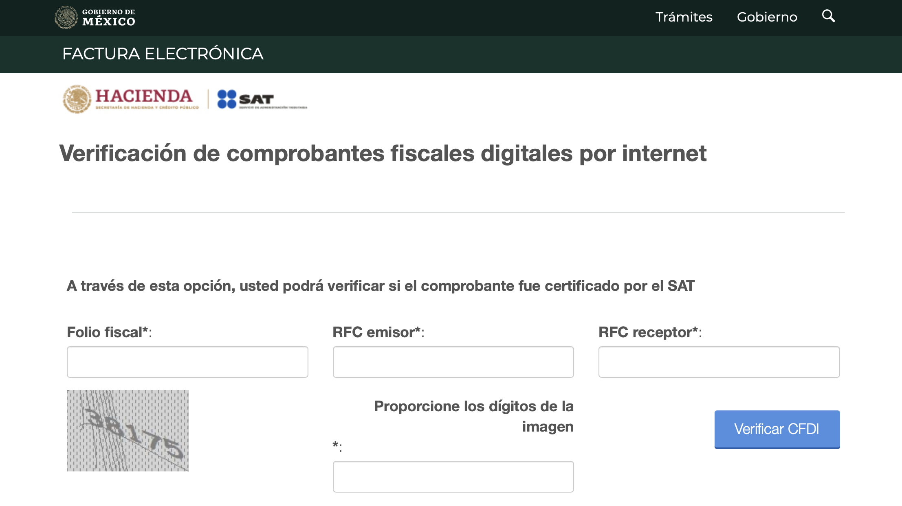
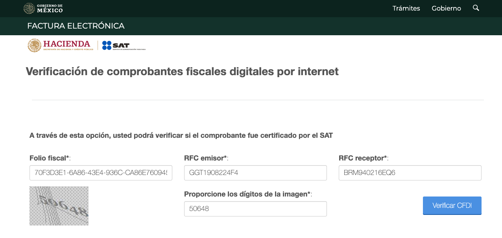
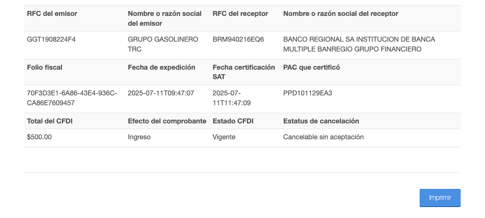

1. Resumen
La verificación de comprobantes fiscales digitales (CFDI) permite confirmar su validez ante el SAT y nos ayuda para saber el estado de una factura. En este artículo se explican los pasos concretos para llevar a cabo esta verificación de forma sencilla.
2. Solución
A continuación, se presentan los pasos para realizar la verificación de comprobantes fiscales digitales de manera rápida y eficiente. Sigue el siguiente flujo para garantizar una actualización efectiva.
- Ingresa al portal: https://verificacfdi.facturaelectronica.sat.gob.mx
- En donde al entrar al portal, directamente nos solicita el folio fiscal, RFC emisor, RFC receptor e ingresar los datos solicitados mediante una imagen. 
- Ingresa los datos solicitados y selecciona “Verificar CFDI” 
- Una vez verificado el CFDI te arrojará la verificación de los comprobantes fiscales digitales de la factura solicitada. 
- Guarda o registra el resultado de la verificación, especialmente si el CFDI está no válido o cancelado, ya que puede requerir seguimiento adicional.
- Si el CFDI es válido, puedes continuar con el proceso administrativo correspondiente.
- En caso de inconsistencias, comunícalo al área encargada para validar con el proveedor o emisor de la factura.
- IMPORTANTE: No des por finalizado el proceso hasta confirmar que todos los comprobantes relacionados han sido verificados y documentados correctamente.